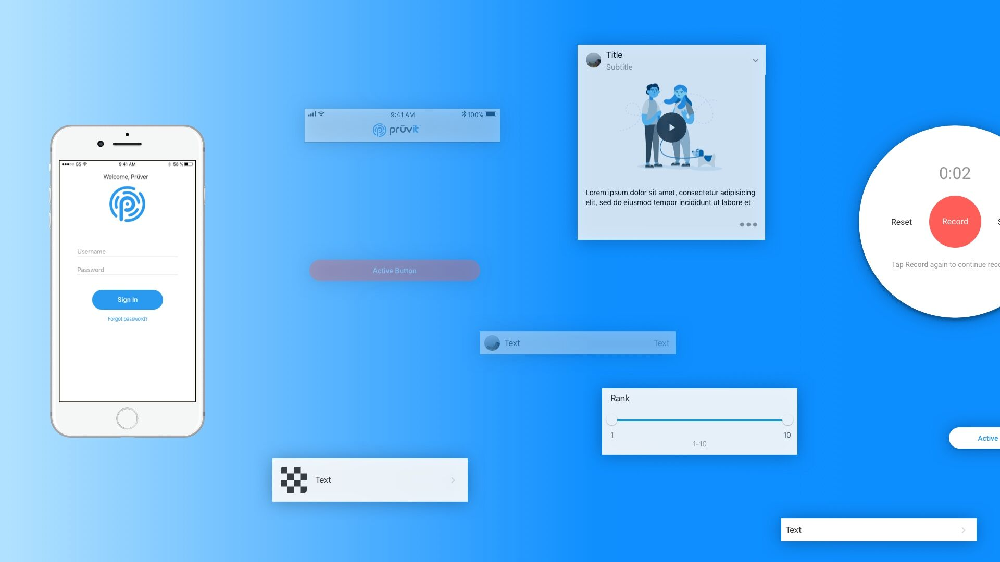
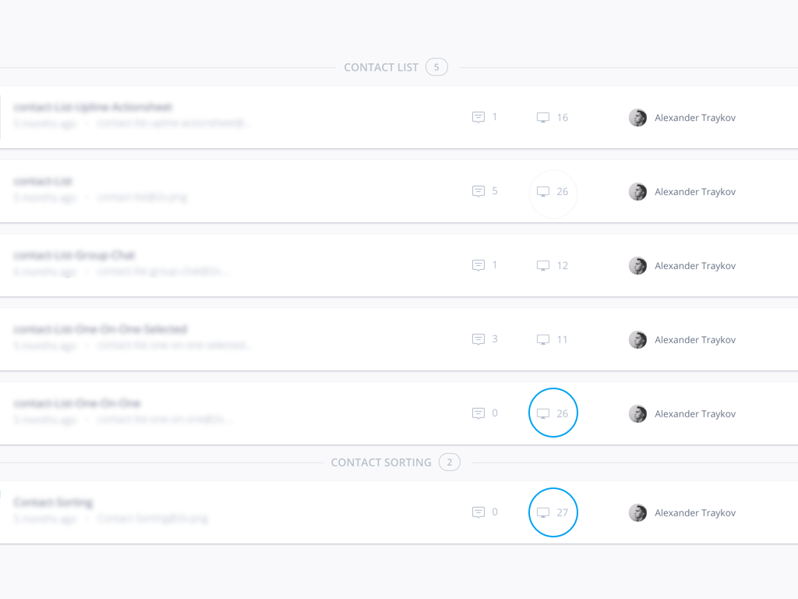

Sport Social
Web app Design
Social Network for Sport?
Sport Social is an app that connects active people with gyms, coaches and likely minded people. It removes the pain of searching for a specific gym with a combination of a seamless interface and having all the gym data needed in the app itself. My role was to set a visual style and design the whole system. I collaborated with the founder and the dev team to launch this project.
Design Process
Exploration
I created low fidelity wireframes to iterate through most of the layout options. Since SportSocial had no set of brand colours but had a logo I went for the green. From there I build the rest of the colours. After the colour selection was done I tackled the typography. Since the project is directly related to sports, the type had to be strong, bold and confident. I picked the geometric font of Montserrat combined with the perfectly legible Roboto. The team behind SportSocial loved the combination of this bold, rounded heading font width the subtle yet readable body font. After distilling the visual research I created the first mid-fidelity wireframes using Sketch and InVision to iterate through the flow and layout of the app. Working with the CEO, who was managing the project as well, we used the wireframes to discuss our product strategy.
Design Stage
After we were done with the mid fidelity wireframes we started to prototype the designs in InVision. In this process we focused on usability, interactivity and accesability. When all the needed fixes were done I unified the design style in a small styleguide. The style guide was really useful in the development stage, since the devs needed the exact values of the elements of the page.
Increasing the symbol's flexibility
With basic symbol nesting, I was able to design most of my components to follow a similar logic when used. In our case that's all we've needed, since a lot of the time we're focusing on rapid prototyping and iterative design. When I had to showcase some sort of interactivity with an element, I had to detach the symbols again. This is why I decided to work this out the other way around - every time a repeatable interactivity pattern occured, I transformed it into symbols. With this decision, I made myself the future favour when encountering the same/similar interaction pattern in the building process of other Pruvit apps.

After we had the base wireframes for the mobile, we iterated on the component placement on the page, until we found the exact the layout we were looking for.
Iterrations, itterations, itterations
When I began working side by side with Pruvit's team, we were just implementing new features like Chat, Contacts and new Newsfeed. I remember that I designed many screens that got scraped in the search of a better pattern or layout. Implementing new features can be described like this - A loop of "Communicate - Itterate".
There's more to come
Since Pruvit is still work in progress I'll keep this page updated. A lot of the features we're working on are still work on are still work in progress, so expect more to come.
Conclusion
Project Timeframe
May 2017 - Present
Design Tools Used
Sketch, InVision, Craft by InVision, After Effects, Principle
Link to Final Project
Pruvit on iOS